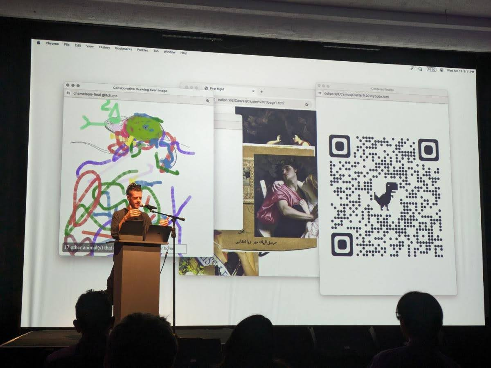
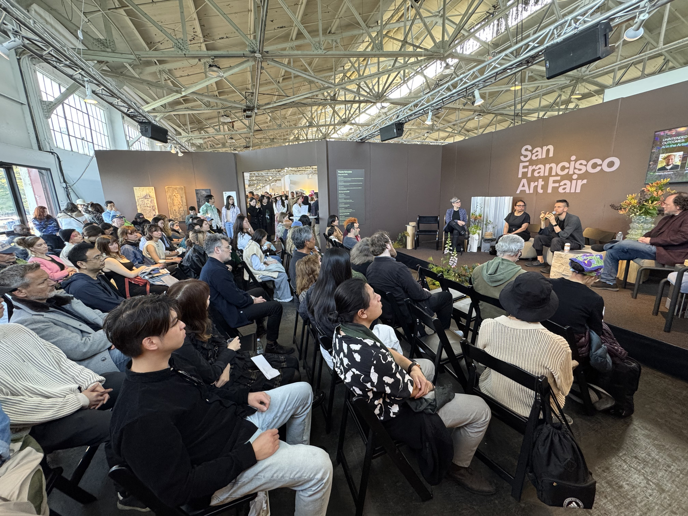
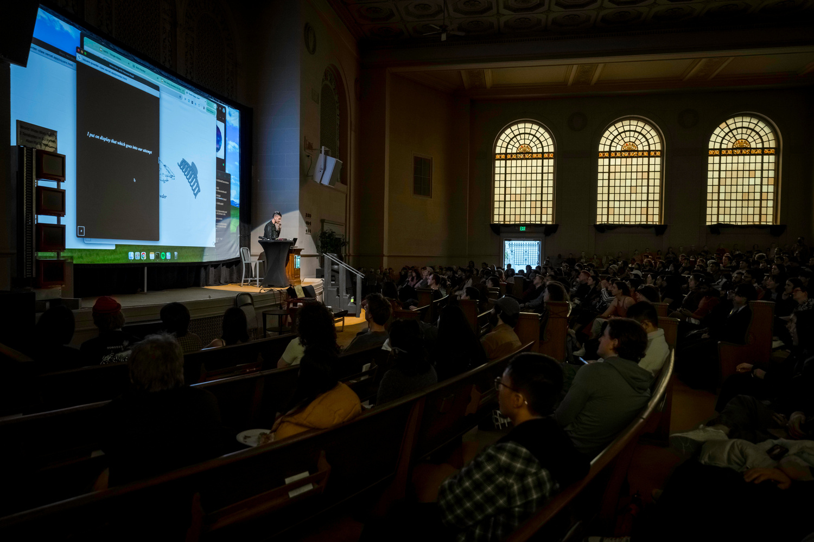
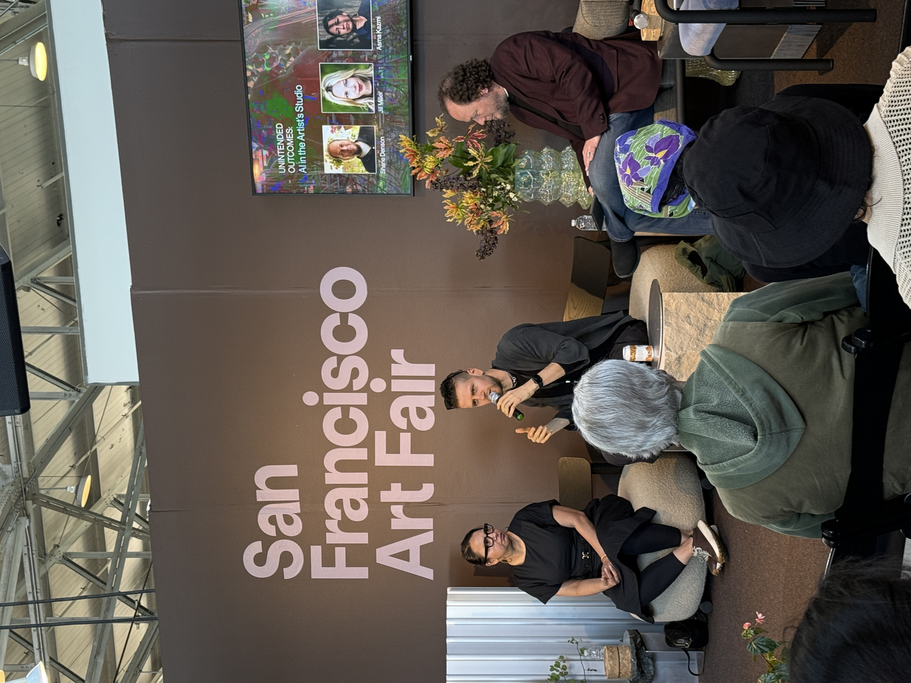

for complex times
I work at the intersection of language, memory, and machine logic. My talks explore how AI systems encode values, mirror culture, and reshape how we think and relate. These aren't lectures. They're provocations designed to challenge defaults, expand perspective, and open space for new kinds of leadership.
Keynotes that Make Room
I speak to rooms where creativity has gone quiet - not from lack of talent, but from too much noise. In my keynotes, I clear that noise. To make space for remembering what creativity feels like when it's alive, not optimized.
I talk about AI, but not the way the headlines do. I trace how systems shape stories, how tools reflect our fears, and how reclaiming technology is often a way of reclaiming the self. These talks are invitations to slow down, to imagine otherwise, to build in ways that feel more human.

Creativity as Infrastructure
We don't need more inspiration. We need architecture for creativity. Patterns, rituals, and tools that make the act of making feel possible again. My talks reframe creative practice as a form of infrastructure: something you build, maintain, and share - not something you wait for.

Artist as Hacker
A hacker breaks things. A poet rearranges the parts. Curiosity over control, intuition over optimization in team environments.

Rewiring the System
Keynotes that shift not just mindsets, but methods. Each of these talks marked a live moment of transformation where creativity, code, and identity came into new alignment. From feedback loops to collective action, from the logic of joy to the architecture of trust, these stories help teams see systems differently, and build more courageously within them.
Selected talks:
This performance-talk explores migration, memory, and machine intelligence through interactive poetry. Halim invites audiences to map displacement, deny border questions, and kneel before a printer god. Blending HTML, myth, and bureaucracy, the piece reimagines home as a drag performer: not a destination, but a longing, a glitch, a ritual.
What happens when feedback flattens? Comparing Amazon stars and Facebook likes, Halim shows how binary signals silence dissent and erode trust. As feedback becomes popularity theater, we lose collective insight. This talk asks: what kind of digital democracy are we building when silence, not criticism, becomes the dominant voice?
Can peeing be a portal to joy? Halim hacks attention, hormones, and habit formation to rewire happiness. From neuroscience to stoicism to oxytocin rituals, he maps a practice of presence built on awe, repetition, and ridiculousness. Happiness isn't the goal, it's a side effect of marveling at your own mundane magic.
From joke to church: Halim traces how a doodle became a god. This talk unpacks the anatomy of viral belief, arguing that leaderless movements thrive on shared purpose, interaction, and principles. Web 3.0 isn't about tech, it's about self-organizing systems remaking reality, from pirate parties to couchsurfing gods of noodles.
Gutenberg hacked a wine press. You can hack your hormones. Halim traces a life of radical experimentation, from Bulletproof coffee to 5-day fasts, revealing how feedback, data, and embodied trials can reprogram our systems. A manifesto for reclaiming evolution as a personal project, this talk reimagines the body as both lab and protest.
What if armies didn't need weapons, leaders, or even faces? In this talk, Halim explores Anonymous, Tahrir Square, self-organizing termites, and the future of collective action. From web forums to biohackers, he charts how inspiration, not hierarchy, builds the most powerful movements. The question isn't how to lead. It's how to ignite.
Economists treat humans as black boxes. Halim opens that box, revealing butterflies, Hitler cats, and mammoths - symbols of emotional, networked individuals with outsized impact. He introduces "nano-economics," a human-scale science powered by public data and collective action, reclaiming the economy from abstraction and returning it to its rightful scale: us.